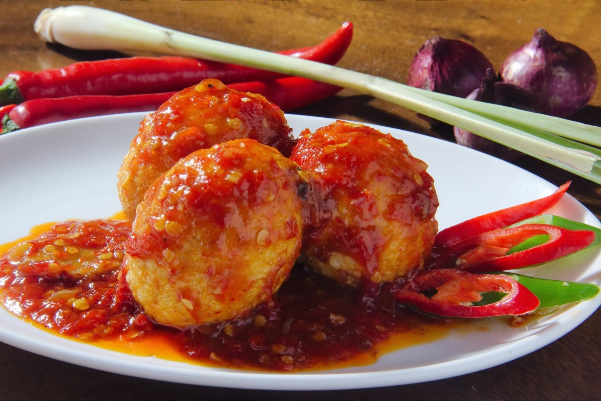

Resep Telur Balado
Ilustrasi telur balado
Salah satu menu praktis nan menggugah selera yang bisa kamu buat dari telur ialah menu balado. Telur balado begitu populer di kalangan masyarakat. Sensasi pedas dipadukan dengan tekstur telur yang gurih di luar, tapi empuk di dalam, terasa berbeda dengan masakan telur lainnya. Rasanya sedap dan cocok jadi lauk bersama nasi untuk santap keluarga.
Kunci utama dari resep telur balado adalah cita rasa siraman sambalnya. Semakin dominan pedas sambalnya, makin lezat pula telur balado ini. Tapi bagi yang tidak suka pedas, bisa menyesuaikan menggunakan bumbu rempah-rempah. Atau mengurangi dan mengganti salah satu bumbunya, misalnya cabai rawit jadi cabai merah yang sudah dibuang bijinya.
Bahan-bahan :
- 7 butir telur ayam
- 8 siung bawang merah
- 2 siung bawang putih
- 8 buah cabai keriting merah
- 3 buah cabai rawit merah
- 1 batang serai, memarkan
- 3 lembar daun jeruk
- 1 sdt garam
- ½ sdt gula pasir
- Minyak untuk menumis
- Air secukupnya
cara memasak :
- Rebus telur sampai matang, lalu kupas kulitnya. Pastikan kamu merebus telur hingga matang sepenuhnya atau telur dalam keadaan hard-boiled
- Goreng telur di minyak panas sebentar saja supaya telur tidak meletus saat dimasak dengan bumbu balado
- Cuci bersih semua rempah, kemudian haluskan bawang merah, bawang putih, cabai rawit dan cabai keriting. Tipsnya, haluskan secara kasar saja atau tidak terlalu halus agar menghasilkan tekstur
- Panaskan minyak, lalu tumis bumbu yang sudah dihaluskan
- Setelah bumbu cukup matang, tambahkan serai dan daun jeruk, lalu tumis sampai harum
- Tambahkan air dan masukkan telur
- Bumbui dengan garam dan gula pasir. Sesuaikan rasanya
- Masak sampai air menyusut dan bumbu meresap ke telur
- Telur balado siap disajikan dengan seporsi nasi hangat